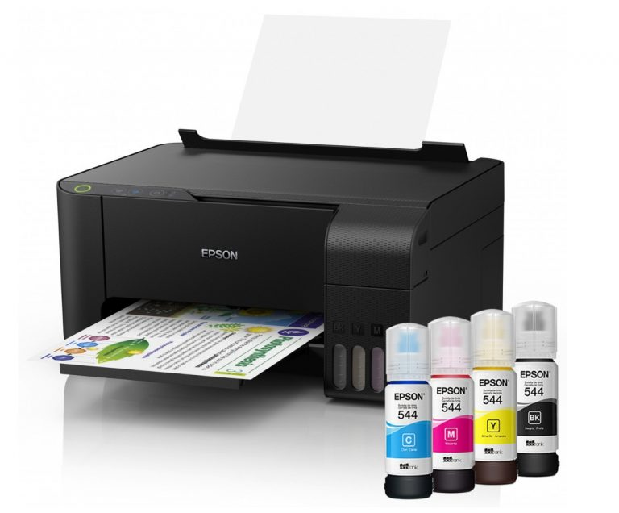
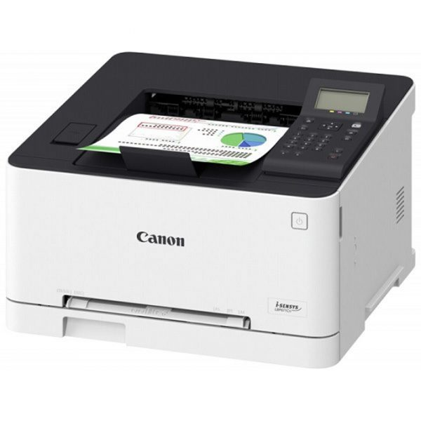

Máy In Màu Mực Nước Hay Bột Tiết Kiệm Hơn?
Máy in màu là gì?
Máy in màu là thiết bị in ấn được sử dụng khi người dùng cần in những nội dung dạng hình ảnh và chữ có nhiều màu sắc. Máy in màu gia đình, văn phòng (không phải loại máy in thương mại chuyên dụng tại xưởng in, nhà in). Hiện nay thường sử dụng 2 công nghệ chính là in phun màu và in laser màu.
Máy in phun màu có độ bền cao, tích hợp công nghệ tiên tiến, được rất nhiều người tiêu dùng đánh giá rất cao. Với chất lượng tuyệt hảo, siêu nét, rất tiện lợi cho người sử dụng.

Cấu tạo máy in màu
Cấu tạo của máy về cơ bản gồm các bộ phận như sau cho từng loại máy in phun màu và máy in laser màu:
| Cấu tạo máy in phun màu | Cấu tạo máy in laser màu |
| – Đầu in với các vòi phun mực: Dùng để phun mực in lên giấy in. – Motor bước đầu máy in: Dùng để di chuyển đầu in trên giấy in. – Hộp mực: Dùng để chứa mực in. – Khay giấy: Dùng để chứa giấy in. | – Nguồn phát tia laser: Dùng để chiếu tia laser. – Hệ thống thấu kính hội tụ và gương: Dùng để điều khiển chùm tia laser. – Trống từ: Dùng để hút mực in, tham gia vào quá trình tạo nội dung in dạng mực in và chuyển mực sang giấy in. – Cụm sấy: Dùng để sấy nóng mực in giúp mực bám chắc vào giấy in. – Hộp mực: Dùng để chứa mực in. – Khay giấy: Dùng để chứa giấy in. |
Ưu và nhược điểm của máy
Máy in phun màu và máy in laser màu đều có những ưu, nhược điểm riêng mà bạn cần nắm rõ. Để có thể chọn lựa được sản phẩm phù hợp nhất cho nhu cầu sử dụng của mình:
Ưu điểm:
- In được trên nhiều chất liệu giấy khác nhau.
- Xử lý màu sắc đẹp, mịn màng hơn.
- Khổ giấy in được thường lớn hơn.
- Chi phí mua máy rẻ hơn.
- Thiết kế nhỏ gọn hơn.
Nhược điểm:
- Tốc độ in chậm hơn.
- Công suất in thấp hơn.
- Khay giấy chứa được ít giấy hơn.
- Bản in dễ bị lem màu hơn do dùng mực lỏng.
- Cần sử dụng và vệ sinh hộp mực thường xuyên để tránh làm đầu in bị tắc.
Nên sử dụng máy in phun màu khi cần in ảnh chuyên nghiệp, chất lượng cao.
Sự khác biệt lớn nhất giữa máy in phun và máy in laser
Máy in phun sử dụng mực nước, phù hợp cho việc in ấn khối lượng thấp. Đây là sự lựa chọn truyền thống của người dùng là hộ gia đình.
Máy in laser sử dụng bột mực, lý tưởng cho việc in ấn với số lượng lớn, chủ yếu được sử dụng trong văn phòng.
- Máy in phun thường nhỏ hơn, rẻ hơn và có tính linh hoạt để in cả tài liệu văn bản và hình ảnh chất lượng cao, đặc biệt là in ảnh. Nhưng hãy cảnh giác với các máy in phun giá rẻ vì những loại máy in này sẽ khiến bạn mất một khoản tiền về sau.
- Máy in laser có thể đắt tiền, hộp mực cũng đắt tiền hơn máy in phun. Nhưng tính ra chi phí trên mỗi trang in của máy in laser thấp hơn nhiều so với in phun đồng thời tốc độ in ấn lại nhanh hơn hẳn.
Bây giờ chúng ta hãy xem xét kỹ hơn điểm mạnh, điểm yếu của máy in laser và máy in phun để bạn có thể tự tin lựa chọn bước mua hàng tiếp theo.
Bạn sẽ sử dụng máy in để làm gì?
- Nếu bạn đang tìm kiếm một máy in tại nhà để thỉnh thoảng in, hầu hết mọi người sẽ tư vấn cho bạn mua một máy in phun.
- Tuy nhiên, một trường hợp phổ biến thường xảy ra với máy in phun là mực sẽ bị khô nếu bạn không sử dụng nó thường xuyên. Điều này nói lên rằng, nếu bạn có đủ ngân sách hãy lựa chọn cho mình một máy in laser với giá cả phải chăng. Thay vì máy in phun bạn sẽ không gặp phải trường hợp bị khô mực nếu để quá lâu.
- Nhưng nếu bạn chỉ in một lượng nhỏ tài liệu và hình ảnh màu một cách thường xuyên, máy in phun sẽ hoàn thành tốt công việc này. Máy in laser được biết đến là bền hơn và có thể in số lượng lớn các tài liệu màu đen và trắng và màu thường xuyên.
- Mặc dù máy in laser ban đầu được sản xuất cho thị trường văn phòng. Nhưng hiện nay chúng đang trở nên phổ biến như một máy in gia đình vì lý do kinh tế.
Máy in màu có những loại nào?
Hiện nay trên thị trường có khá nhiều mẫu máy in văn phòng, gia đình với cách phân loại đa dạng. Ngoài cách chính là dựa trên công nghệ in (gồm máy in phun màu và máy in laser màu) thì có thể kể đến thêm một số tiêu chí phân loại phổ biến khác như:
- Dựa trên khổ giấy in: Gồm máy in khổ hẹp (in được các cỡ giấy từ A4 trở xuống) và máy in khổ rộng (in được các cỡ giấy A3, A2, A1, A0).
- Dựa trên số màu mực in sử dụng: Gồm máy in 4 màu (dùng 4 màu CMYK là Cyan – xanh lơ, Magenta – hồng sẫm, Yellow – vàng, Key – đen). Máy in 6 màu (ngoài 4 màu CMYK có thể thêm màu xanh lá cây và màu cam hoặc màu xanh lơ nhạt và hồng sẫm nhạt). Máy in 8 màu (ngoài 6 màu còn thêm màu vàng nhạt và màu đen nhạt).
- Dựa trên chức năng: Gồm máy in đơn năng (chỉ in) và máy in đa năng (có thể in và kết hợp thêm một hoặc một số chức năng như photocopy, scan, fax).
- Dựa trên khả năng đảo mặt giấy tự động: Gồm máy in 1 mặt in màu (không có khả năng đảo mặt giấy tự động) và máy in 2 mặt in màu (có khả năng đảo mặt giấy tự động).
- Dựa trên khả năng kết nối: Gồm máy in qua mạng LAN (kết nối với máy tính chủ). Máy in qua mạng network (kết nối qua mạng có dây). Máy in wifi (kết nối qua mạng không dây).
Lưu ý gì khi mua ?
Khi mua máy in, bạn nên lưu ý một số điểm sau để đảm bảo chất lượng in ấn tốt và bền bỉ. Chọn máy in đáp ứng tốt nhu cầu sử dụng, trong đó cần lưu ý về:
– Công nghệ in màu (in phun hay in laser).
– Các thông số kỹ thuật: Độ phân giải (bao nhiêu dpi), số lượng màu mực (bao nhiêu màu), khổ giấy in (khổ nhỏ hay khổ to), tốc độ in (bao nhiêu trang/phút). Công suất in (bao nhiêu trang/tháng), chuẩn kết nối (USB, mạng có dây, mạng không dây)…
– Các chức năng (chỉ in hay là có cả scan, photo, fax; có in 2 mặt tự động không…).Chọn máy in đến từ các thương hiệu uy tín như máy in màu Epson, máy in Canon… Để đảm bảo chất lượng thiết bị và được hưởng chế độ bảo hành tốt nhất.

Lưu ý gì khi sử dụng?
Trong quá trình sử dụng, bạn nên lưu ý một số điểm sau để đảm bảo máy hoạt động bền bỉ, an toàn và in ấn đạt chất lượng cao nhất:
- Sử dụng máy đúng theo hướng dẫn của nhà sản xuất.
- Nếu cần in lượng lớn tài liệu thì nên chia thành nhiều lần in, không in tất cả cùng lúc. Để tránh máy bị quá tải và các bộ phận của máy bị hư hại, hỏng hóc.
- Nên sử dụng giấy in theo khuyến cáo của nhà sản xuất (về định lượng, kiểu giấy…) để đảm bảo ảnh in ra có chất lượng đẹp, chi tiết sắc nét nhất.
- Lưu ý cần bảo quản giấy khô, phẳng để không bị kẹt giấy khi in hoặc giảm chất lượng bản in.
- Nên sử dụng mực in chính hãng để đảm bảo bản in rõ ràng, sắc nét, bền màu, tránh các hiện tượng lem mực, phai màu.
- Nên vệ sinh, bảo trì máy thường xuyên để đảm bảo các chi tiết không bị lỗi, máy hoạt động trơn tru.
- Đặt máy tại vị trí bằng phẳng, khô thoáng, tránh nguồn nhiệt, nguồn ẩm cao, tránh bị ánh nắng mặt trời chiếu vào trực tiếp.
Cần nạp mực hoặc sửa máy in tận nơi? Mực In Trường Phát có mặt trong 30 phút tại TP.HCM — in test trước khi tính tiền, bảo hành 1 tháng.
0908.327.123 · 0819.007.394 (Zalo cả 2 số)